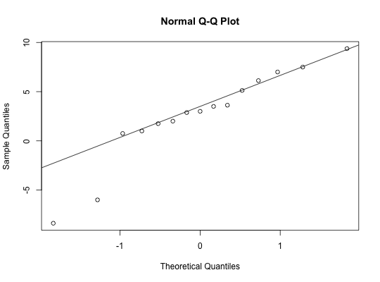

Data for Exercise 7.62
Darwin
A data frame with 15 observations on the following three variables.
Kitchens, L. J. (2003) Basic Statistics and Data Analysis. Duxbury
str(Darwin)#> 'data.frame': 15 obs. of 3 variables: #> $ pot : int 1 1 1 2 2 2 3 3 3 3 ... #> $ cross: num 23.5 12 21 22 19.1 ... #> $ self : num 17.4 20.4 20 20 18.4 ... #>differ <- Darwin$cross - Darwin$self qqnorm(differ)qqline(differ)shapiro.test(differ)#> #> Shapiro-Wilk normality test #> #> data: differ #> W = 0.90079, p-value = 0.09785 #> #>wilcox.test(Darwin$cross, Darwin$self, paired = TRUE)#> #> Wilcoxon signed rank test #> #> data: Darwin$cross and Darwin$self #> V = 96, p-value = 0.04126 #> alternative hypothesis: true location shift is not equal to 0 #> #>rm(differ)